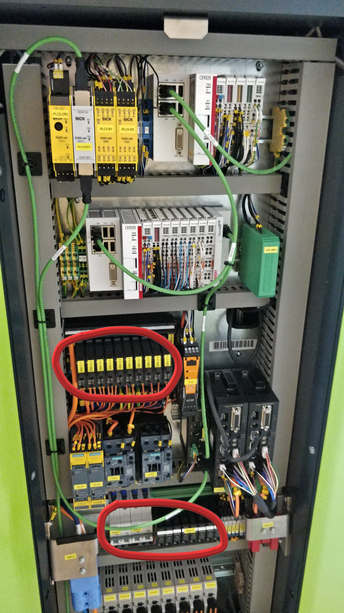

Introduction
Before following any of the setup instructions in this guide, it is critical that the following conditions have been satisfied:
- Suitable WiFi network infrastructure is in place, operational, and accessible (i.e. you have the password and can connect to the network freely). See our WiFi requirements here.
- A charger and charging plate have been installed. Operating in automatic mode with no available charging stations will cause unpredictable behavior. See charger info here.
- All operators and responsible personnel have read and understood the safety precautions in the Operation Manual.
Initial Setup
You will need the following items to successfully prepare the AGILOX ONE for operation:
- 4mm hex key
- #5 double-bit enclosure key / panel key
- WiFi-enabled laptop, tablet, or smartphone
- For unpacking: a forklift or crane, a drill or impact gun with a #30 Torx bit to disassemble the crate, and a 19mm wrench to remove shipping braces.

LiDAR Installation
There is a detailed unloading and unpacking guide in section 4 of the Operation Manual, but there is not much to it - you can begin by removing all the screws and supports from the crate, but try to preserve these materials as much as possible in case you need to send a unit back for any reason. Using the provided shackle and strap, lift the unit off of the base with a forklift, then pull the base of the crate out from under the unit, and finally set the unit down on the floor.
Every AGILOX unit is shipped with its LIDAR navigation sensor in a separate box to minimize the possibility of damage during transport. This sensor is somewhat delicate (and very expensive to replace), so please use extreme caution when handling it. Included in the LIDAR box are 3 screws and washers. If the screws are already threaded into the holes in the bottom of the sensor, remove them and set aside for now. To install the sensor, first unlock the lid on top by turning the lock counterclockwise with your panel key and then flip the lid open, as shown below:


Remove the green cover by pulling straight up, and then towards you. Near the LIDAR mounting platform on the left side, you can see 2 cables for power (grey) and LAN (green). Attach the cables as shown below. Each connector is keyed so that it can only be installed in one direction, which could be different from what you see here. No tools are required - don't use anything more than finger-tight force, or you could damage the connectors.


When mounting the sensor, it's important to note that there are 2 raised pins on the mounting platform, which should slide into 2 mounting points on the bottom of the sensor (picture on the left below). When everything is properly aligned and seated, the sensor should sit flush with the mounting platform:

Now, secure the sensor with the 3 screws through the holes in the bottom of the mounting plate, using your 4mm hex key:

With the 3 screws firmly in place, replace the green cover, then close and lock the lid on top. The green cover has 2 tabs on each side and one in the center at the bottom. Ensure that all of these are properly in place before closing the lid. And finally, before locking the lid, ensure the black and blue wires for the antennas are pushed back and clear of the locking mechanism.


Powering On
Before you can turn the unit on, you must turn on all of the breakers which are turned off to protect the battery during shipping. To do this, first remove the front panel with your panel key by turning the lock counter-clockwise. When you unlock the panel, it will rock back and come to a rest in this slightly open position seen here on the left. You can then remove this panel by pulling straight up, and gently set it aside.

Behind this panel, there are 3 groups of breakers that need to be turned on. Below you can see the left-most breaker from each group in the off/down position for reference, with all the others being ON. Flip ALL breakers to the on/up position.

Now replace and lock the front panel, and the unit is ready to be powered on. Turn the key switch on the unit's shoulder counter-clockwise all the way to the left (maintenance mode), and then turn the power switch clockwise to the "|" symbol and let go.

Maintenance Mode
Before an AGILOX unit can create or join a Union (group of units that share information with each other), the WiFi network information must be loaded into the unit in maintenance mode. After powering on, the unit will take a minute or two to boot up. Once the boot process is complete, the Acknowledge button opposite from the power and mode switches will light up. Once the blue light is on, press the Acknowledge button. The Start button will light up shortly after that, and again, press the Start button once it is illuminated. Now the LED indicators along each side of the unit should be flashing yellow to indicate it is in maintenance mode.


You can now also see some information displayed by the LIDAR sensor on top: the unit's serial number and IP address. When in maintenance mode, every unit will create a WiFi hotspot which has the same name as the unit's serial number. The password for this hotspot is also the same as the name, the unit's serial number. Connect your laptop or other WiFi device to this new hotspot, and type in the serial number for the password. Once you have done this, open your web browser and type in the IP address shown in the bottom row of the LIDAR sensor's display in the address bar.
After navigating to the IP address shown by the unit, you should see a basic HMI screen. There is not much to see yet, and in order to make any changes you will have to log in by clicking the last button on the left. The default login for customers is admin and password also admin. Later you can change this password and add other user accounts with varying levels of access, but for now we will leave it as is.

After logging in, you can now see the full suite of HMI control groups on the left hand side. Some quick notes about the HMI: You can always click the AGILOX logo in the top left corner to return to this view. Also, everything that you do in the HMI is updated on the unit in real time. With few exceptions, there are no save or upload/download buttons, and almost all activities you can perform in the browser window become effective immediately.
Now, hold down both the Start and Acknowledge buttons at the same time until you hear a chime (about 6 seconds). After you hear the tone, you will see a new button on the HMI screen - a gear icon with an orange background.


Union Setup
Click on the orange gear icon, and you will be prompted to enter the name of the Union you want to connect this unit to. This name can be anything you want for the first unit, but if there are already existing units that you want this one to collaborate with, the Union name must be exactly the same as the one used by the other units (case sensitive). When finished, press the check mark to continue.
WiFi Setup
Next, select the WiFi network you would like to connect this unit to. After selecting the network, enter the password you used to connect to that network.

IP Type
After entering the WiFi information, you will be presented with the choice of a DHCP or Static IP address. For testing purposes, DHCP is the quickest way to get going, but a static IP is preferred for long term operation. Another option is to create DHCP reservations for each unit, if you prefer to leave them in DHCP mode. In either case, your IT department must modify the WiFi network configuration to ensure that each unit has a permanent IP address which will not change. Leaving the units in either mode without appropriately configuring the network can eventually lead to network dropouts, IP address conflicts, and other unpredictable behavior.
That's it! If this unit is joining an existing Union, you can flip the key switch over to Automatic mode, press the Start button, and in a few moments the unit will download the map and work order information from the other units and begin working right away.
If this is the very first unit being set up, continue to the next section for more information on operating the unit in Manual mode, which we will need later to create the map.
Manual Mode
Now that the initial setup is complete, we can begin operating the unit in Manual mode. To start, turn the key switch to the Manual mode position in the center ( || symbol ). The start button will illuminate, and in order to confirm the mode change you must press the start button. When ready, the LED indicators on the side of the unit will be flashing blue to indicate Manual Mode.

After switching to Manual mode, the hotspot that you were connected to while the unit was in Maintenance mode will be switched off. The unit will now be connected to the WiFi network that you configured in the last step, which means that you can no longer use the HMI from the same IP address as before. First connect your device to the same WiFi network you configured in the previous section. Then press and release the Start button 3 times as shown in the animation to the right.
The unit will again show its serial number and IP address on the LIDAR sensor at the top of the unit, but now the IP address should be different than the one you saw in Maintenance Mode. As you did in the previous section, type this IP address into your browser and log in to the admin account.

The primary use for Manual Mode is the "Manual Drive" function, which can be found by clicking the second button from the top on the left side of the HMI screen.

This screen allows you to drive the unit manually in any direction. Click or tap and hold the white dot in the center, then drag in the direction you would like to move, as shown. When you let go, the unit will stop immediately. Keep in mind that, while all of the safety fields are active in Manual Mode, it may be possible to manually drive the unit into a position it can't get out of. If this happens, you can also use this screen in Maintenance Mode to drive with the safety fields deactivated. However, manual driving in maintenance mode also requires that you hold down the acknowledge (blue) button on the unit to enable the driving controls. There is no safety active when driving in maintenance mode, so the acknowledge button acts as a "dead man switch."
The other items at the corners of this screen enable some additional functionality:
- Enables raising/lowering the lift system. Note that lowering the forks requires a very wide safety field: if the forks will not go down, try driving to a more open area first.
- Enables parallel driving in any direction, without turning.
- Activates the teaching function, used to create the map.
- Allows station entering. In order to manually pick up a pallet or parallel drive through a very narrow aisle, this option must be selected. But, watch your feet with this option selected, as it disables a portion of the safety field near the fork tips.
In the next section, we will be creating map the using the button next to number #3.
Creating the Map
Items required for this section:
- WiFi-enabled laptop (smartphone may also be used for driving)
- The free and open source drawing program Inkscape: click here to download
- At least one active AGILOX vehicle that has been through the Initial Setup process
Auto-Teach Function
Before we begin to create the map, use Manual Mode to drive the unit into the intended operating area. It should be parked initially in an area with a clear view of fixed reference points, such as a wall and other structural features of the building which are unobstructed by crates or other materials, and ideally beginning about 20-30 feet away from and facing the center of one of the walls. Below is an example of the driving procedure for the teaching function. It's best to drive in a roughly star-like or saw-tooth pattern as shown, rather than driving in circles along the walls:
The area shown here is relatively small, and in fact a room this size may be adequately mapped with a single scan, which may not require any driving at all. Note the pattern shown in this example is for illustration purposes and not necessarily to scale.
One last thing before you begin: in order to see what you're doing, you will need to enable some visibility options in the HMI. Go the second button up from the bottom on the left hand side (Visualization Toggles) and select "Show scan data in visualization" and "Show map in visualization" (the two highlighted in green here).
The scan data option will show you dark and light blue lines, which represent the vision of the floor-level safety scanners, as well as green lines, which show data from the navigation scanner on top. The show map option will show black lines which represent the reference points that have been taught as part of the map. There will not be any black lines just yet, since we have to create them!

Now as in the last section, go to the Manual Drive page, and click on the button next to #3 to add a new contour from the navigation scanner.

In the window that pops up, first select "Rectangular Snap" and then click Enable AutoTeach.

Now the unit will begin scanning the environment. There are audio-visual cues to let you know that scanning is in progress and when it is done. Begin driving the unit in the mapping pattern shown above. When the navigation match drops below a certain level, it will automatically stop and perform another scan. It's also a good idea to keep an eye on the map as it is being built, so that you can ensure the dimensions of the defined map area can accommodate the scan data - it is helpful here to have your laptop on the map view and use your phone for manual driving. Go to the misc. tools and settings tab in the HMI and click the map settings button, so that a window that looks like this comes up:

You will have to experiment with the dimensions and offsets to fit the map area into the window the way you want. Note that all of the information that AGILOX captures about the environment is always stored in the map, even if you can't see it. If you start driving and auto-teaching outside of the defined map area, or if you shrink or shift the map in such a way that a previously visible portion disappears, the information will not be lost. You can simply adjust the map until it is visible again - however, anything outside of the defined map area cannot be used for navigation purposes, so the auto-teach process will be faster and more accurate if you keep adjusting the map to contain everything within the visible area.
When finished mapping: from your computer, go back to the main menu by clicking the AGILOX logo in the top left if you are not already there. For the next step, we need to download the map file that we have created, by clicking the download button on the right hand side. But first, a little cleanup may be necessary.
When the "show map" visualization is enabled, you can also see all of the scan points here on the right hand side. You can toggle the visibility of or delete specific map teaching increments here, and by hovering your mouse over the numbers you will see which segments are included in that iteration highlighted in red.
Finally, the last button under the visualization toggles tab, "Erase map areas," will allow you delete specific portions of the map. This is useful for removing small sections of erroneous information from the map, such as scan points picked up by people's heads, crates, forklifts, or other temporary obstacles that you don't want to be a part of the permanent map data.
When cleanup is finished and the map is properly sized and rotated, download the map file.
Inkscape Configuration
To facilitate the processing of AGILOX maps, some menu windows (1) and the color palette from the documentation (2) are required.
Settings Menu
The settings of the menus and windows are saved in the file preferences.xml (file can be downloaded below). This file must be copied into the directory for the local Inkscape settings. This directory is usually located under C:\Users\
Color Palette
The color palette for the AGILOX standard map colors is saved in the file agilox.gpl (file can be downloaded below). This file is to be copied into the directory for the local customer-specific color palettes from Inkscape. This directory is usually located at C:\Users\
After both files have been copied, please restart Inkscape.
Note
If the AGILOX color palette is not automatically displayed after the restart, then it must be selected manually.
By clicking on the arrow on the right edge of the color palette (1), a menu for selecting the color palette AGILOX (2) appears.